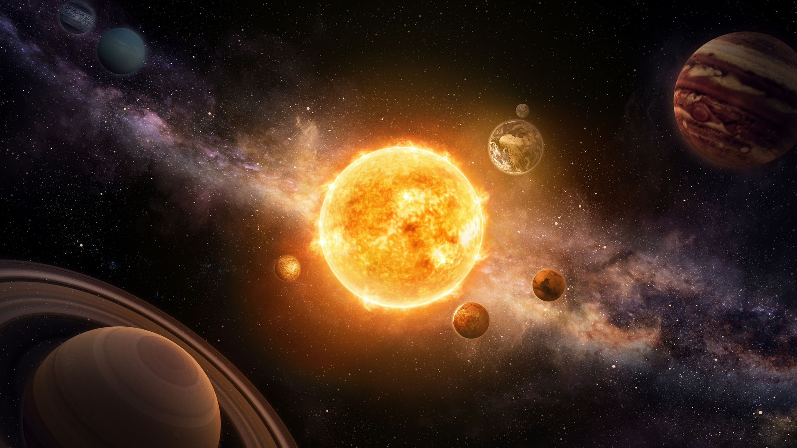
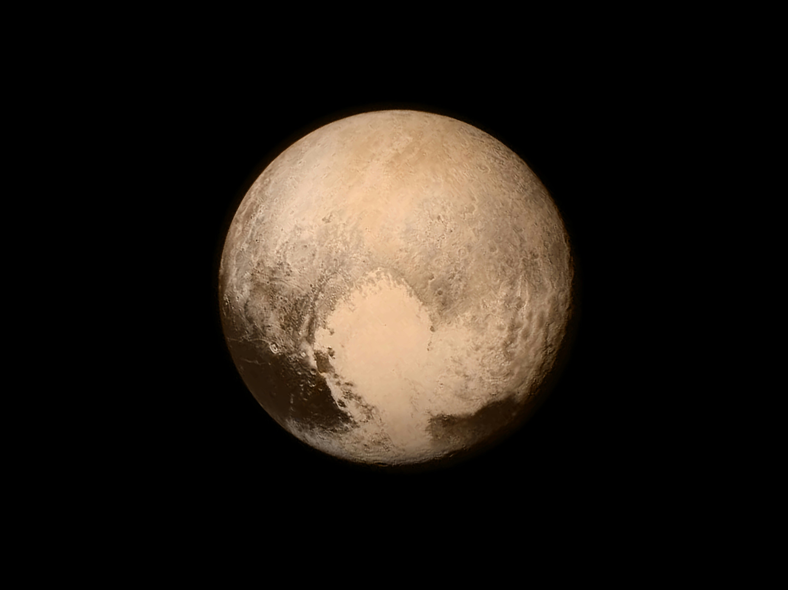
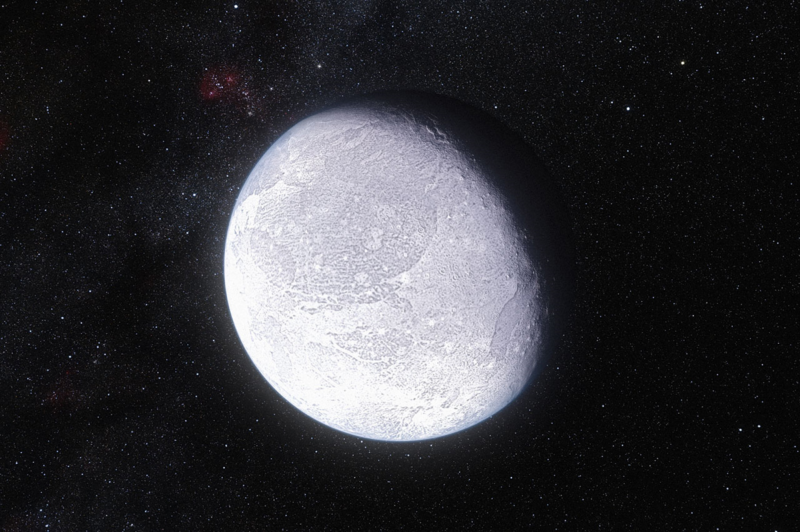
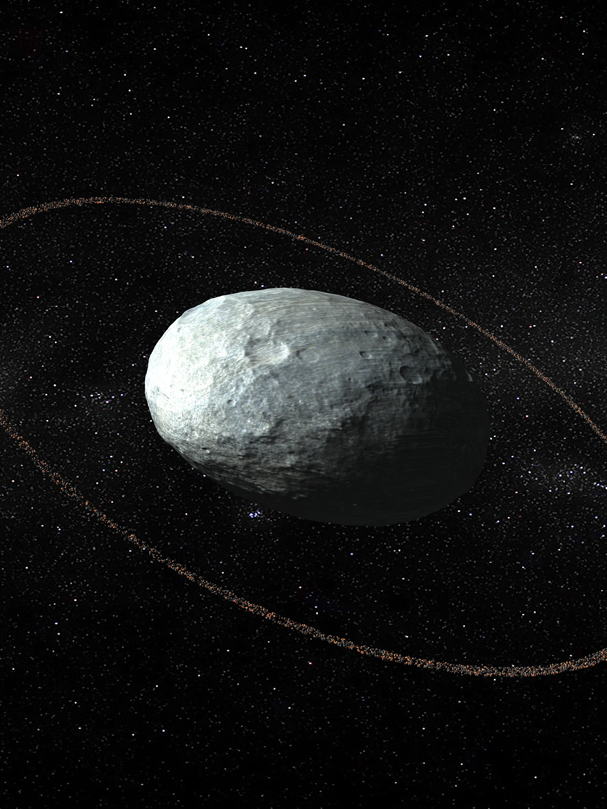
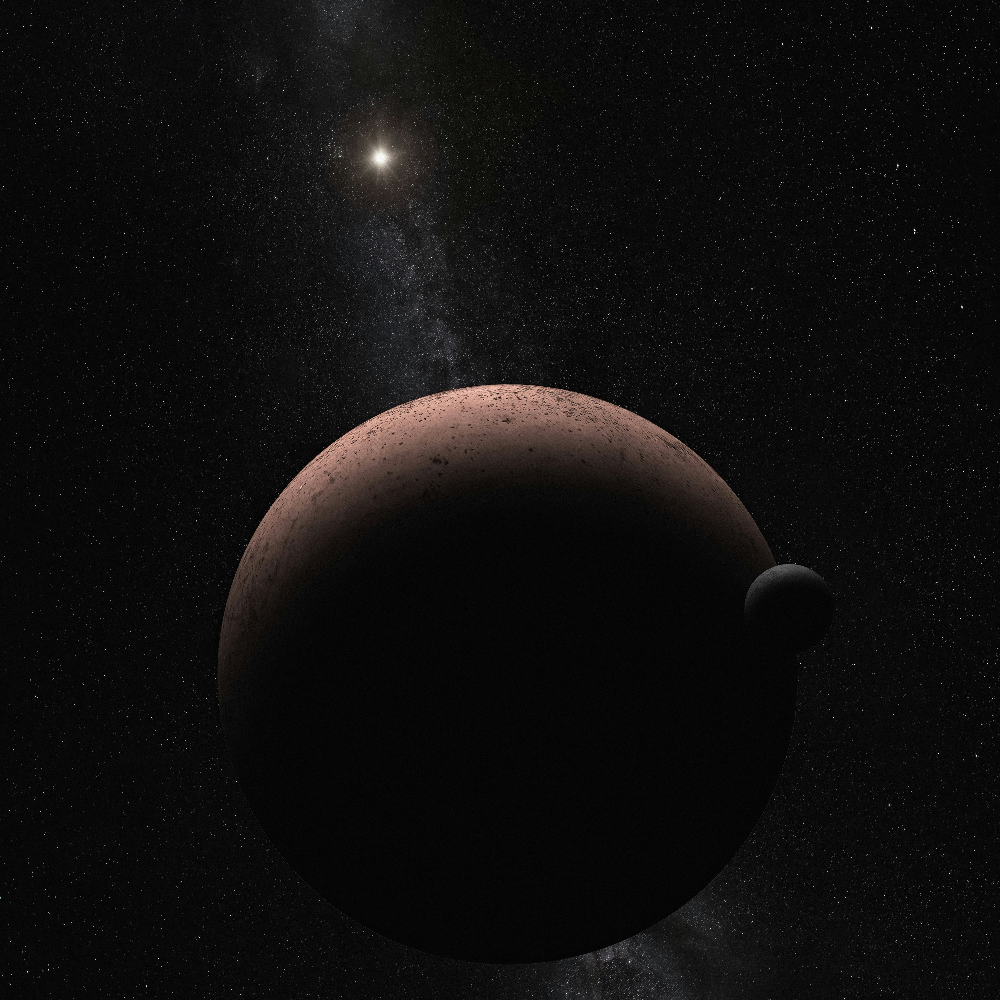
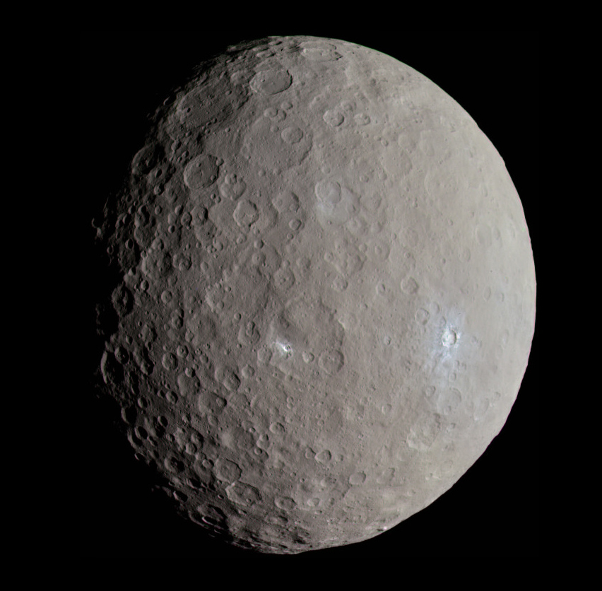

Sun
The sun is very important because it provides heat/warmth to the Earth, its gravity keeps the planets in orbit around it, and it is the main source of energy for Earth's climate and weather.
(The Sun is Not a planet, it is a star!)

There are eight primary planets in our solar system:
- Mercury
- Venus
- Earth
- Mars
- Jupiter
- Saturn
- Uranus
- Neptune
Mercury
Mercury is one of the 8 major planets in the solar system. Mercury is the smallest planet in our Solar System, it is the closest to the Sun, and its surface can reach around 430°C during the day and drop to around -180°C at night.

Venus
Venus is the second planet from the Sun and the hottest planet in our solar system. Its surface temperature can reach up to 471°C, making it hotter than Mercury despite being farther from the Sun.

Earth
Earth is the third planet from the Sun and the only known celestial body to harbor life. It is the largest of the four terrestrial planets and has a single natural satellite, the Moon.

Mars
Mars is the fourth planet from the Sun and is often called the "Red Planet" due to its reddish appearance caused by iron oxide (rust) on its surface.

Jupiter
Jupiter is the fifth planet from the Sun and the largest in our solar system. It is a gas giant with a mass more than twice that of all the other planets combined.

Saturn
Saturn is the sixth planet from the Sun and the second-largest in our solar system. It is a gas giant known for its prominent ring system.

Uranus
Uranus is the seventh planet from the Sun and the third-largest in our solar system. It is a ice giant with a unique sideways rotation.

Neptune
Neptune is the eighth and farthest-known planet from the Sun in our solar system. It is an ice giant with a deep blue coloration due partly to methane in its atmosphere.

Dwarf Planets
Dwarf planets orbit its host star which in our solar system, is the Sun. It also has to be mostly round and have to be big enough that its gravity cleared away any other objects of similar size near its orbit around the Sun.
The five most recognized dwarf planets are Pluto, Eris, Haumea, Makemake, and Ceres.
Pluto
It is The most famous dwarf planet, it is the former ninth major planet, it is located in the Kuiper Belt.

Eris
Currently, we do not have close-up photographs of the dwarf planet Eris because it is nearly three times farther away than Pluto. While it took 9.5 years to reach Pluto, reaching Eris would take around 24 to 30 years. This is because Eris is currently moving toward its aphelion—the farthest point in its orbit—roughly 97 AU (14.5 billion kilometers) from the Sun. This immense distance makes the travel time significantly longer than any past mission to the inner or outer planets.
Here is an image of what people thinks Eris looks like, though this is not an actual photographs.

Haumea
Haumea is an oval-shaped dwarf planet that is one of the fastest rotating large objects in our solar system. The fast spins distorts and changes Haumea's shape, making this dwarf planet look like a football.

The image shows an artist's illustration of the dwarf planet Haumea.
Because Haumea is located deep within the icy Kuiper Belt—roughly 4 billion miles away from Earth, no spacecraft has ever been sent to fly past it or explore it up close.
Makemake
Makemake is slightly smaller than Pluto, and is the second-brightest object in the Kuiper Belt as seen from Earth while Pluto is the brightest. It takes about 305 Earth years for Makemake to make one trip around the Sun.

This image is not a real photograph; it is an artist concept of what it would look like. Makemake has been seen by telescopes from Earth and space, though it has never been visited or photographed up close by a space probe since it is over 50 times further than the Sun than Earth.
Ceres
Ceres was the first dwarf planet discovered. It was discovered at Januaruy 1, 1801. It was located in the main asteroid belt between Mars and Jupiter.

The humanity has already reached Ceres using a robotic spacecraft. The image shown was very accurate to the real planet.
Fun facts about planets
- Ceres was classified as an asteroid for over 150 years
- Jupiter has a famous Great Red Spot. It's cause was a giant storm that has been raging for hundreds of years.
- Mars has two small, potato-shaped moons named Phobos and Deimos.
- Earth is the only known planet in the universe to support liquid water on its surface and harbor life.
- About 71% of Earth's surface is covered by water.
- Earth's atmosphere acts as a vital shield against space radiation and incoming meteoroids.
- Mars are known as the Red Planet because of rusty iron oxide dust covering its soil.
- Mercury is the smallest planet and the closest to the Sun, yet it is not the hottest.
- Mercury's craters are named after famous artists, musicians, and authors.
- A day on Mars is called a "sol". It lasts 24 hours and 39 minutes, which is almost identical to an Earth day.
- If you weigh 100 lbs/kg on Earth, you will weigh 38 pounds on Mercury. And it has the lightest gravity on Mercury.
| Planet | Order from the Sun | Diameter (km) | Length of each day | Mass (1024 kg) |
|---|---|---|---|---|
| Mercury | 1st | 4,880 | 4222.6 ≈ 4223 Hours | 0.330 |
| Venus | 2nd | 12,104 | 2802 hours | 4.87 |
| Earth | 3rd | 12756 | 24 hours | 5.97 |
| Mars | 4th | 6792 | 24.7 ≈ 25 hours | 0.642 |
| Jupiter | 5th | 142984 | 9.9 ≈ 10 hours | 1898 |
| Saturn | 6th | 120536 | 10.7 ≈ 11 hours | 568 |
| Uranus | 7th | 51118 | 17.2 ≈ 17 hours | 86.8 |
| Neptune | 8th (Furthest) | 49528 | 16.1 ≈ 16 hours | 102 |
| Pluto |